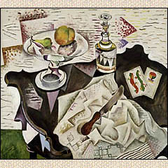

20th-Century Art

(c)
See examples of late 20th-century trends in European and American art. Included are paintings by Max Beckman, Georgia O'Keeffe, Joan Miro, Grace Hartigan, and Chuck Close.
Send comments to the
webmaster.